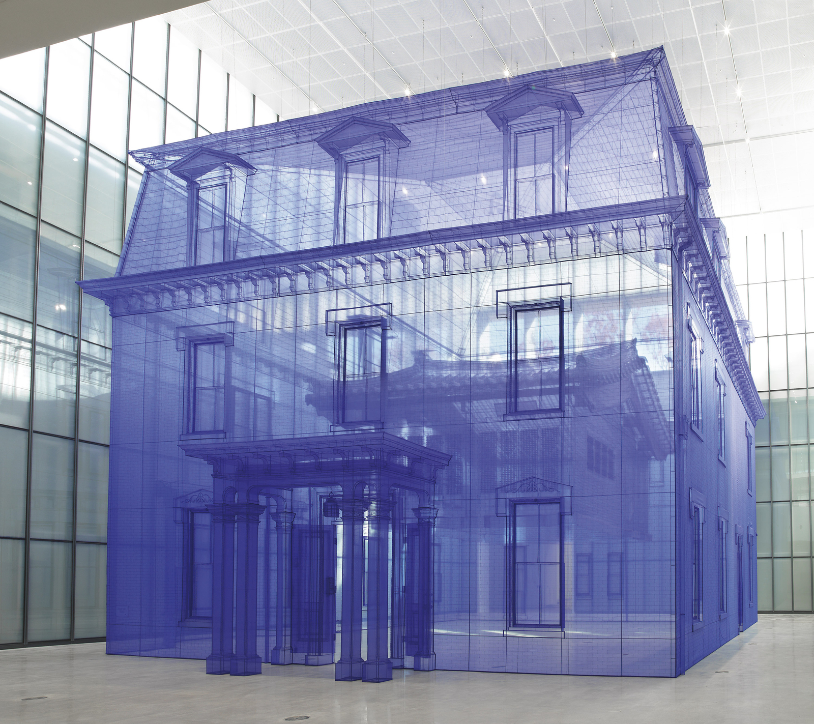
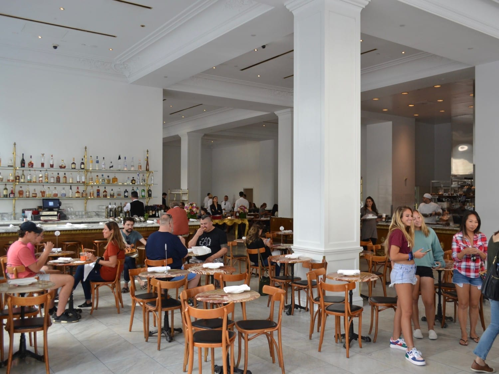
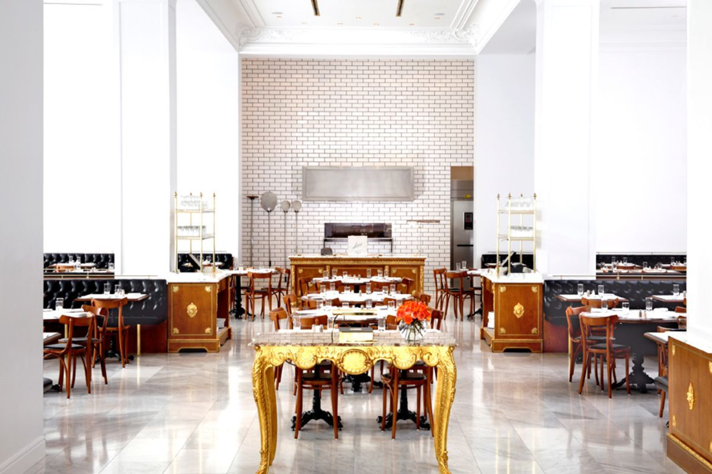
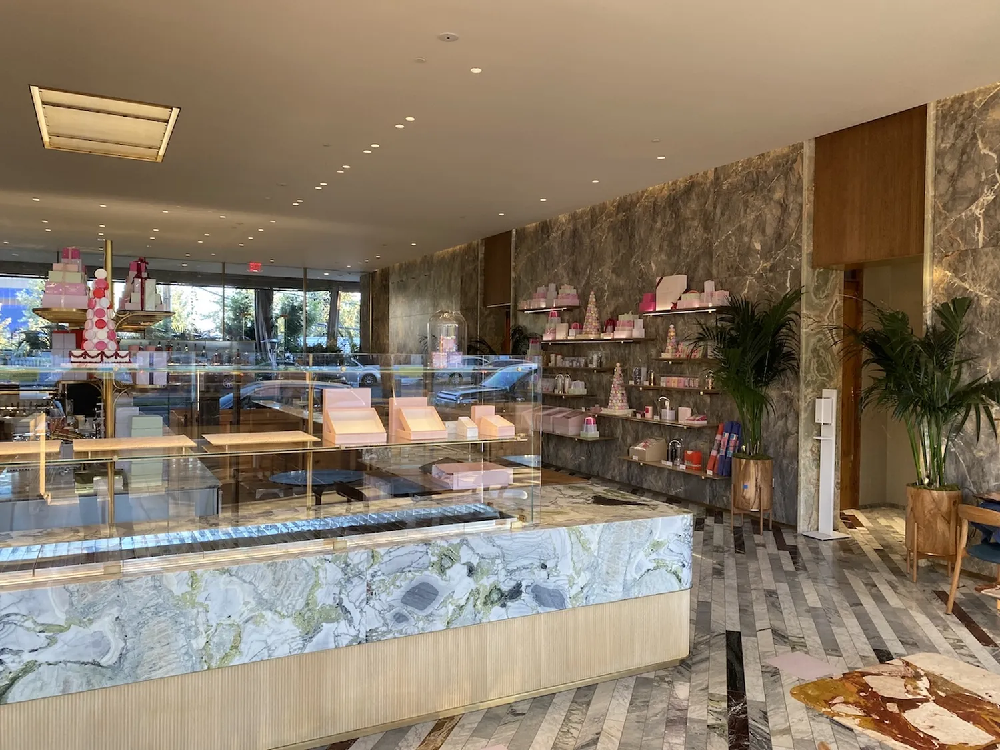
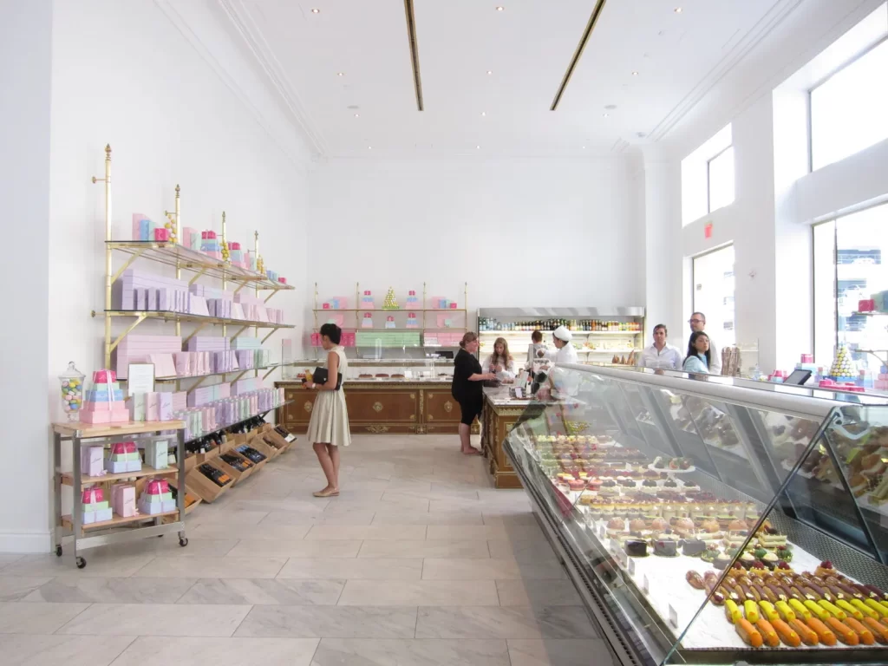
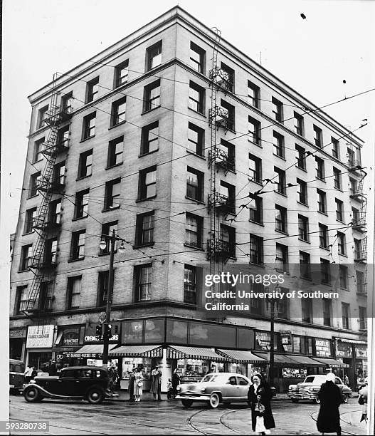
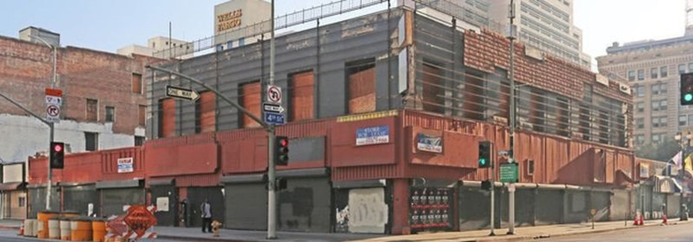
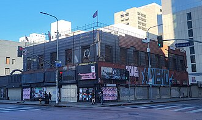

01 // Architectural Memory Precedents
Aldo Rossi: Architecture as a permanent artifact that survives its original function, holding the collective memory of the city.
Do Ho Suh: Spatial memory rendered as translucent fabric. Architecture as a ghostly, transportable shell of personal history.
Neues Museum & Zeitz MOCAA: The palimpsest. Carving into the old to reveal the strata of history rather than overwriting it entirely.
Visual Reference Matrix

Aldo Rossi // Urban Artifact

Do Ho Suh // Ghost Architecture

Neues Museum // Historic Strata

Zeitz MOCAA // Subtractive Void
02 // Node: Bottega Louie
Data Extraction // Crowdsourced Memory
"Its high ceilings, beautiful white walls, and fresh flour decorations are luxurious and old world gorgeous. Even the cacophony of voices that echo off the large ceilings add to the luxurious, Italian glow."
"The place is huge, but feels stark with the white walls. They call it minimalist, I guess. It IS very loud due to the wall-to-wall marble."
"A beautiful pastries section right when you walk in with all the artful creation in the glass display. The open kitchen adds to the vibe, letting you watch the action."
Generated Markdown Logic
### NODE: MM-918 **Geo-Lock:** 34.4035, -117.9221 --- ### Extracted Materials --- ### Spatial Massing Elements
03 // Bottega Louie Synthesis
AI Generated Hallucinations

AI Render // Exterior Proxy

AI Render // Interior Proxy
Actual Photographic Artifacts

Archive // Facade

Archive // Interior

Archive // Macarons

Archive // Pizza Oven
04 // Node: O.T. Johnson
Data Extraction // Historic Archives
"Constructed in 1902, the seven-story Romanesque Revival building sits prominently at the intersection of 4th and Broadway."
"The exterior facade is constructed of rich, dark red glazed brick with intricate contrasting stone spandrels, wrapping heavily around the corner."
"The top floor features distinctive stepped Romanesque brick arches over the windows, capped by a heavy, ornate stone wrap-around cornice."
Generated Markdown Logic
### NODE: OT_JOHNSON_BLDG **Geo-Lock:** 34.0496, -118.2491 --- ### Extracted Materials - **Glazed Brick** (Hex: #b22222) - **Iron Columns** (Hex: #323232) - **Marble Lobby** (Hex: #f5f5f5) --- ### Spatial Massing Elements - **Lobby**: 1 instance(s) [Layer: 01_INTERIOR] - **Office**: 10 instance(s) [Layer: 01_INTERIOR] - **Corridor**: 5 instance(s) [Layer: 01_INTERIOR] - **Desk**: 1 instance(s) [Layer: 03_FIXTURES] - **Window**: 59 instance(s) [Layer: 04_ENCLOSURE] - **Ceiling**: 1 instance(s) [Layer: 04_ENCLOSURE] - **Facade**: 1 instance(s) [Layer: 04_ENCLOSURE] - **Brick**: 1 instance(s) [Layer: 05_FINISHES] - *...and 2 more elements extracted.*
05 // O.T. Johnson Synthesis
AI Generated / Rhino Massing

Rhino System // Isometric Massing

AI Render // Romanesque Details
Actual Photographic Artifacts

Archive // Facade Detail

Archive // Street Corner

Archive // Historical Era

Archive // Interior Remnant